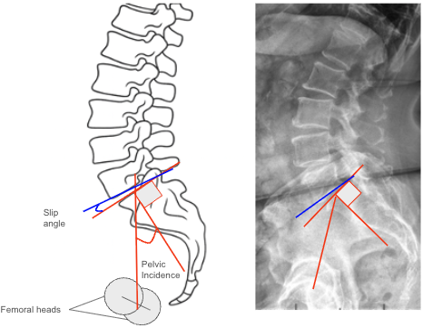

1) Description of Measurement
The Pelvic Incidence–Slip Angle Relationship describes the geometric and biomechanical connection between pelvic morphology and lumbosacral kyphosis in spondylolisthesis. It integrates two fundamental sagittal parameters:
The relationship between these two parameters defines the severity of sagittal imbalance, risk of progression, and surgical correction goals in spondylolisthesis. A high PI is commonly associated with greater lumbosacral kyphosis and increased slip angle, while low PI indicates a more vertical sacrum and reduced shear stress. Understanding the PI–Slip Angle interplay is essential in classification (e.g., Labelle’s pelvic balance types) and surgical planning to restore sagittal harmony.
2) Instructions to Measure
3) Normal vs. Pathologic Ranges
Pelvic Balance Classification (Labelle et al.):
Key Insight: The greater the difference between PI and Slip Angle, the more pronounced the sagittal malalignment and compensatory pelvic retroversion.
4) Important References
Labelle H, Mac-Thiong JM, Roussouly P, et al. Spino-pelvic alignment after surgical correction for developmental spondylolisthesis. Eur Spine J. 2011;20(Suppl 5):817–825.
Hresko MT, Labelle H, Roussouly P, Berthonnaud E. Classification of high-grade spondylolisthesis based on pelvic balance: the importance of sagittal alignment. Spine. 2007;32(20):2208–2213.
Mac-Thiong JM, Labelle H, Parent S, et al. Sagittal spinopelvic balance in lumbosacral spondylolisthesis: a comparison between high-grade and low-grade slips. Spine. 2008;33(5):487–492.
Boxall D, Bradford DS, Winter RB, Moe JH. Management of severe spondylolisthesis in children and adolescents. J Bone Joint Surg Am. 1979;61(4):479–495.
Dubousset J, Herring JA, Shufflebarger H. Spondylolisthesis in children and adolescents. Spine. 1999;24(24):2640–2648.
5) Other info....
The PI–Slip Angle Relationship forms the foundation of modern spondylolisthesis classification systems, correlating pelvic morphology with sagittal deformity.
High PI → increased shear stress at the lumbosacral junction, greater risk for high-grade slips.
Low PI → vertical sacrum, reduced shear, and less slip progression potential.
In high-grade spondylolisthesis, surgical goals include:
Ideal postoperative targets:
The relationship also predicts compensatory mechanisms:
Advanced Imaging (EOS or CT) may improve precision for angular calculations and 3D modeling.